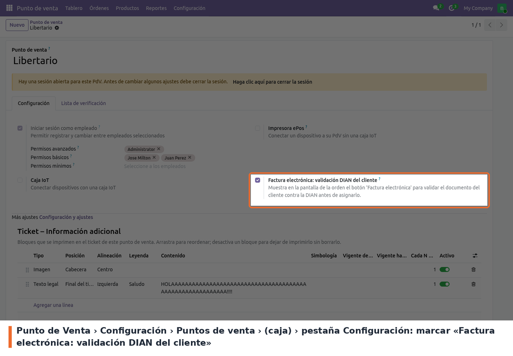
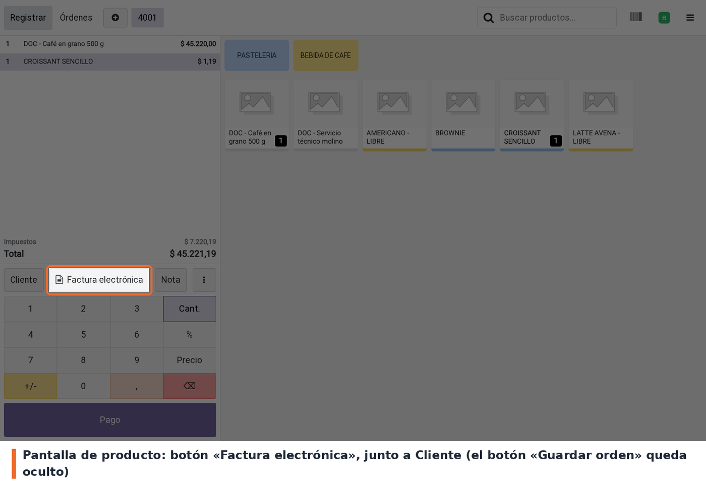
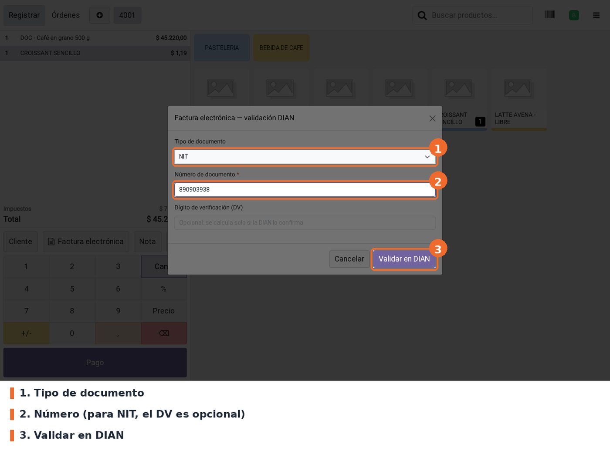
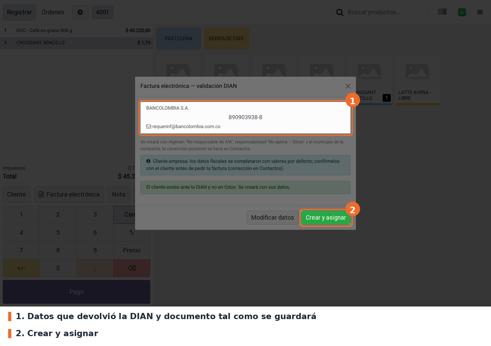
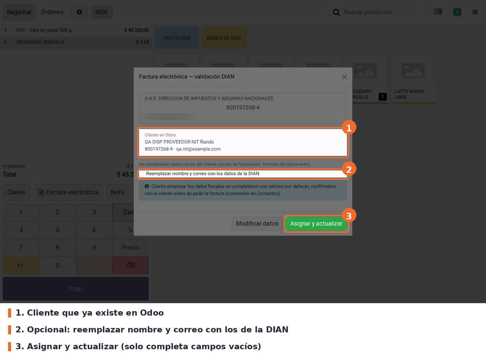
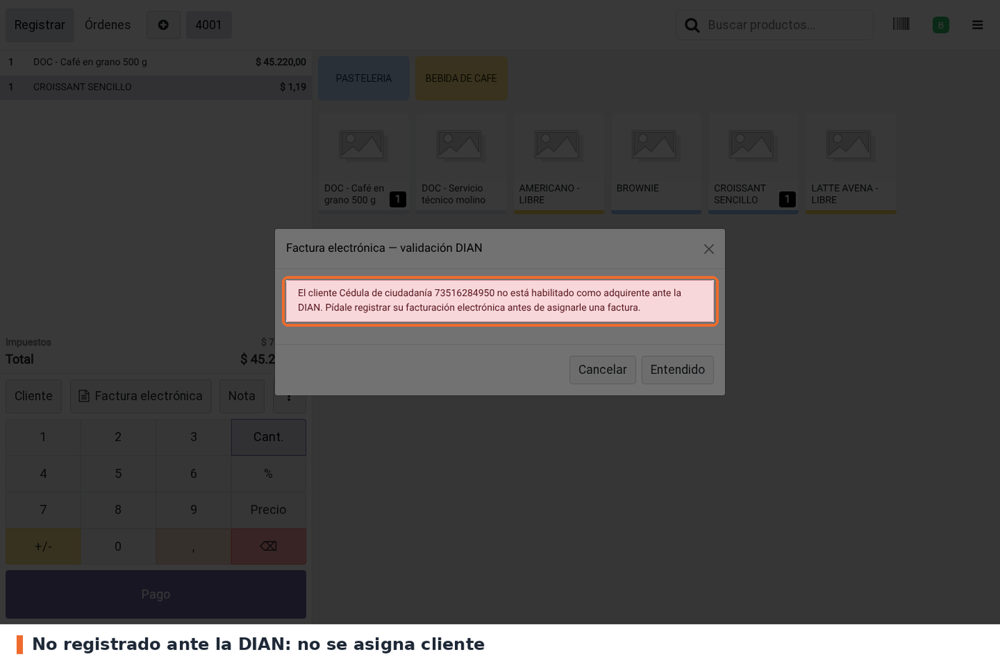
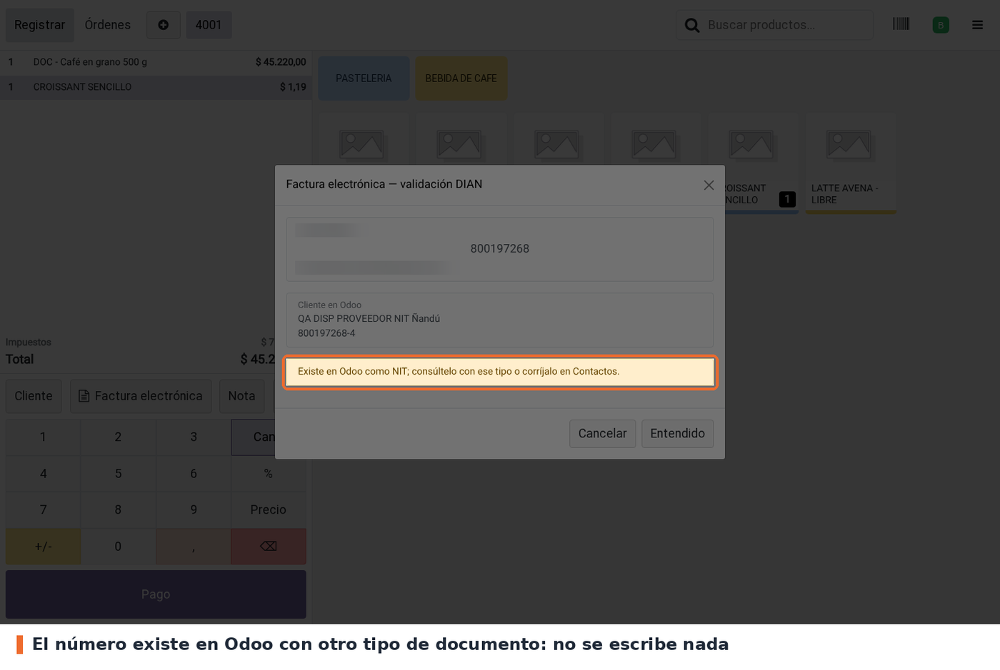
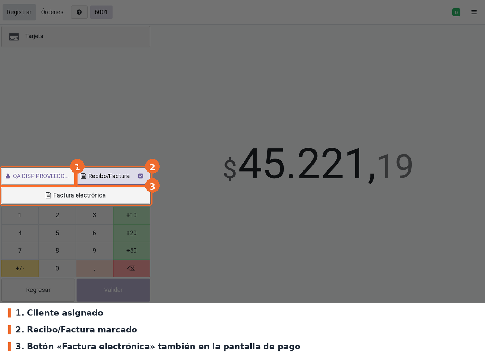
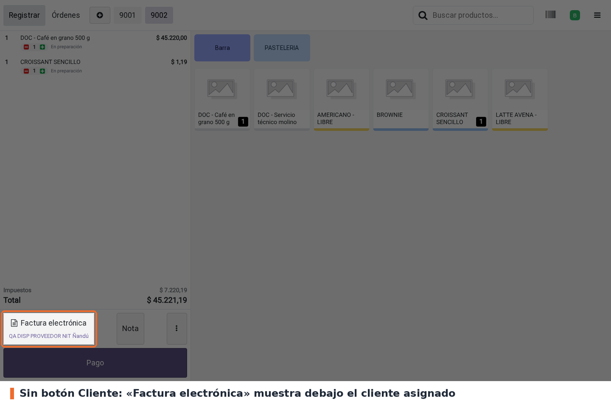
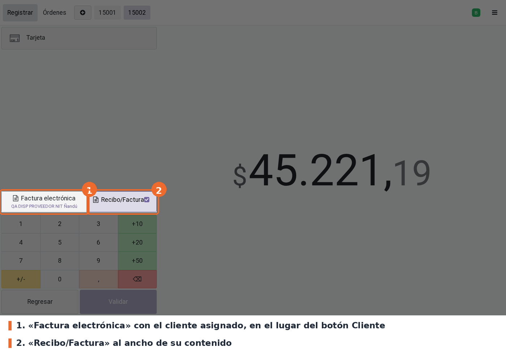

Agrega al POS un botón Factura electrónica para que el cajero valide ante la DIAN al cliente
que pide factura electrónica antes de asignarlo a la orden. Consulta el registro de adquirentes
de la DIAN a través del servicio Edipo de Jorels, con el mismo token (api_key) con el que la
compañía factura.
Con el resultado, el cajero ve el nombre que registró la DIAN, el documento tal como se guardará
(p.ej. 890903938-8) y el correo, y decide:
Una vez asignado el cliente, la orden queda marcada para Factura.
Importante: los datos que devuelve la DIAN los registraron los emisores que ya le facturaron a ese cliente, y pueden estar desactualizados o ser de otra persona. El cajero tiene que confirmar el nombre y el correo con el cliente antes de asignar.
Efecto colateral: el módulo oculta siempre el botón nativo Guardar orden (ícono de
subida, fa-upload) en la pantalla de producto y en la barra de acciones de pantallas chicas, esté
activo o no el botón Factura electrónica en esa caja.
Ocultar botón de cliente (por caja, opcional): un segundo ajuste retira el botón nativo Cliente de la pantalla de producto (escritorio y barra de acciones móvil) y de la pantalla de pago. Solo tiene efecto si la caja también tiene marcado Factura electrónica: validación DIAN del cliente; con ese ajuste desmarcado, el botón Cliente sigue visible para que la caja no se quede sin forma de asignar cliente. Con los dos marcados, el cliente se gestiona solo con Factura electrónica, que muestra debajo el nombre del cliente asignado; en la pantalla de pago Factura electrónica pasa a la misma fila que Recibo/Factura, en el lugar de Cliente, y se resalta con el color principal del POS cuando la orden exige cliente y todavía no lo tiene. No hay forma de desasignar un cliente desde la interfaz con esta opción activa.
l10n_co_edi_jorels instalado, con la facturación electrónica habilitada en la
compañía. Si no lo está, el popup responde "La facturación electrónica no está habilitada en esta
compañía".api_key). Es el mismo que usa la instancia para facturar. Sin él, el popup
responde "No está configurado el token de Edipo"; si el token no es válido, avisa que no está
autorizado.En Punto de Venta › Configuración › Puntos de venta, abrir la caja y, en la pestaña Configuración, marcar Factura electrónica: validación DIAN del cliente. El ajuste viene marcado de forma predeterminada; desmarcarlo oculta los botones Factura electrónica en esa caja. El botón Guardar orden queda oculto igual, con el ajuste marcado o no.
A continuación está Ocultar botón de cliente (viene desmarcado). Al marcarlo, el botón nativo Cliente desaparece de la pantalla de producto (escritorio y móvil) y de la pantalla de pago, donde Factura electrónica toma su lugar junto a Recibo/Factura. El cliente se gestiona entonces solo con Factura electrónica, que muestra debajo el nombre del cliente ya asignado.
Solo tiene efecto si «Factura electrónica: validación DIAN del cliente» también está marcado. Si se desmarca la validación DIAN, el botón Cliente vuelve a aparecer aunque Ocultar botón de cliente siga marcado.
Atención: con esta opción activa no hay forma de desasignar un cliente desde la interfaz del POS.

Punto de Venta › Configuración › Puntos de venta › (caja) › Configuración: 1. «Factura electrónica: validación DIAN del cliente»; 2. «Ocultar botón de cliente», que solo aplica con el 1 marcado
La caja puede tener una sesión abierta mientras se cambia el ajuste. El POS lo toma la próxima vez que se carga.
La URL del servicio se cambia con el parámetro de sistema jorels.edipo.api_url (por defecto
https://edipo.jorels.com).
En la pantalla de producto, con la orden en curso, pulsar Factura electrónica, a la derecha de Cliente. En pantallas chicas el botón aparece en la barra de acciones como FE. También está en la pantalla de pago, debajo de Cliente y Recibo/Factura.

Pantalla de producto: botón «Factura electrónica» junto a Cliente
Las órdenes con devoluciones no permiten cambiar el cliente: el botón muestra un aviso y no abre el popup.
Elegir el tipo de documento, escribir el número y pulsar Validar en DIAN. Para NIT, el
dígito de verificación es opcional. Se aceptan también NIT-DV (p.ej. 890903938-8) y el NIT de
10 dígitos con el DV pegado, si empieza por 8 o 9. Un DV que no corresponde se rechaza e indica el
correcto. El documento genérico de consumidor final (222222222222) se rechaza: para ese caso se
usa el botón Cliente.

Popup: tipo de documento, número y Validar en DIAN
Arriba aparecen el nombre que registró la DIAN, el documento en grande tal como se guardará y el correo. Confirmar con el cliente que el nombre y el correo son los suyos. Si algo no coincide, Modificar datos vuelve al paso anterior.
Cliente nuevo en Odoo: Crear y asignar. Se crea con los datos de la DIAN y los valores fiscales por defecto. En empresas (NIT), un aviso azul pide confirmar los datos fiscales con el cliente.

Cliente confirmado por la DIAN que no existe en Odoo: Crear y asignar
Cliente que ya existe en Odoo: se muestra debajo de los datos de la DIAN. Asignar y actualizar completa los campos vacíos (correo de facturación, municipio, régimen, responsabilidad, formato del NIT) y actualiza el correo de facturación electrónica con el de la DIAN. El nombre y el correo del contacto no se pisan: si el nombre difiere, el popup pide confirmar con el cliente que es el mismo (las diferencias de comas, tildes u orden de palabras no cuentan); el correo del contacto solo se completa si estaba vacío. Si no hay nada que actualizar, el botón dice Asignar cliente.
El popup recuerda que la factura se enviará al correo de facturación electrónica con copia al correo de contacto (el envío lo gestiona la configuración de facturación electrónica de la compañía).

Cliente existente: Asignar y actualizar sin pisar nombre ni correo del contacto
Al confirmar, el popup se cierra, el cliente queda en la orden y aparece la notificación "Cliente … asignado para factura electrónica".
Si la DIAN no tiene registrado el documento, el cliente tiene que habilitarse como adquirente ante la DIAN. Se cierra con Entendido.

No registrado ante la DIAN
Si el número ya existe en Odoo con otro tipo de documento (p.ej. guardado como NIT y consultado como cédula), el popup no escribe nada y avisa en amarillo con qué tipo existe. Hay que consultarlo con ese tipo o corregir el contacto en Contactos.

El número existe en Odoo con otro tipo de documento
En la pantalla de pago, el cliente aparece asignado y Recibo/Factura marcado. Al validar el
pago, la factura sale a nombre de ese cliente y l10n_co_edi_jorels la envía a la DIAN.

Pantalla de pago: cliente asignado y Recibo/Factura marcado
El botón de factura nativo de Odoo se llama Invoice; con el idioma Español (Latinoamérica) se lee Recibo/Factura y con Español (España) Factura. Es el mismo botón.
Si la caja tiene marcados los dos ajustes (Factura electrónica: validación DIAN del cliente y Ocultar botón de cliente), el botón nativo Cliente no aparece y todo se hace con Factura electrónica:
Pantalla de producto (escritorio y barra de acciones móvil): queda Factura electrónica (o FE en pantallas chicas) en lugar de Cliente. Una vez asignado, el nombre del cliente aparece debajo del botón (en móvil, al lado de FE).

Pantalla de producto con «Ocultar botón de cliente»: el cliente asignado se ve bajo «Factura electrónica»
Pantalla de pago: Factura electrónica ocupa el lugar del botón Cliente, en la misma fila que Recibo/Factura y con el nombre del cliente asignado debajo; Recibo/Factura queda al ancho de su contenido. En pantallas chicas los dos botones se apilan, igual que en el POS estándar. Si la orden exige cliente (por ejemplo, porque se marcó Recibo/Factura) y todavía no lo tiene, Factura electrónica se resalta con el color principal del POS, igual que se resaltaba el botón Cliente nativo.

Pantalla de pago con «Ocultar botón de cliente»: «Factura electrónica» con el cliente asignado en el lugar de Cliente, y Recibo/Factura al ancho de su contenido
Con este modo no hay forma de desasignar un cliente desde la interfaz: si se asignó el cliente equivocado, se valida y asigna el correcto con Factura electrónica (reemplaza al anterior) o se descarta la orden.
create_ok): "El cliente existe ante la DIAN y no en Odoo. Se creará con sus
datos." Botón Crear y asignar.needs_email): "La DIAN confirmó a … pero no tiene correo registrado". Pide el
correo al cajero (obligatorio y con formato válido) y luego Crear y asignar. Los correos de
relleno de la DIAN (sininformacion@…, sincorreo@…) cuentan como "sin correo".found): muestra el cliente de Odoo. Botón Asignar cliente o Asignar y
actualizar.not_registered): "El cliente … no está habilitado como adquirente ante la
DIAN". Botón Entendido.type_mismatch): "Existe en Odoo como …; consúltelo con ese tipo o
corríjalo en Contactos". Aviso amarillo, no escribe nada.ambiguous): "Hay más de un contacto con este documento". Lista los contactos y
hay que resolverlo en Contactos.archived): "El cliente existe en Odoo pero está ARCHIVADO". Hay que reactivarlo
en Contactos.incomplete): "El cliente existe en Odoo pero le falta: …" (correo de facturación
sin correo de la DIAN para completarlo, o municipio sin municipio en la compañía).invalid): número vacío, NIT de menos de 7 dígitos, DV que no concuerda,
documento de consumidor final, correo con formato inválido. Botón Modificar datos.config_error): facturación electrónica deshabilitada, token ausente o no
autorizado. Botón Cerrar.connection_error): "La DIAN no respondió (…). Reintente en unos segundos." Botón
Reintentar.unexpected_response): el servicio rechazó la consulta o respondió
algo que no se reconoce. Botón Reintentar.permission_error): el usuario no puede leer, crear o editar contactos. Botón
Cerrar.En todos los casos que no son de asignación, la orden queda como estaba.
fa-upload) se
quita de la pantalla de producto y de la barra de acciones aunque la caja tenga desmarcado
Factura electrónica: validación DIAN del cliente.type_mismatch.NIT-DV, sin DV y sin guion, pero no NIT
guardados con puntos (900.123.456-8). Si aparecen en producción, agregar esa variante.timeout=(5, 10)) para que la caja no quede esperando.edi_sanitize_vat: decidir según el volumen de contactos en producción. La
búsqueda de existentes filtra por ese campo en cada consulta.api_key quedó expuesto en sesiones de trabajo previas.
Rotarlo antes de producción (decisión del equipo)./acquirer devuelve municipio, régimen o responsabilidad
del adquirente, usarlos en lugar de los valores por defecto.static/description/icon.png): falta y requiere arte.